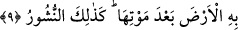

Mevlâ’nın zâtının, sıfatlarının, fiil ve amellerinin güzelliğiyledir. Mevlâ’yı bulan her
şeyi bulmuştur. Onu bulamayan tüm dünyayı elde etse de hiçbir şey bulamamıştır. Şöyle
rivayet edilmiştir: İbrahim b. Edhem bir gün Dicle’nin kenarında oturmuş hırka
dikiyordu. İğne suya düştü. Birisi ona, “Sahip olduğun saltanatı bıraktın, eline ne
geçti?” diye sordu. Denize işâret etti ve “iğnemi veriniz”, dedi. Bin kadar balık sudan
çıktı; her birinin ağzında altından bir iğne vardı. “Kendi iğnemi istiyorum” dedi. Cılız
bir balık çıktı ve onun iğnesini getirdi. İbrahim onu aldı ve “Elde ettiğim en değersiz
şey budur, gerisini sen bilemezsin” dedi. İşte bütün bunlar, hâlis hidayetin semereleri,
hâlis niyet ve sâlih amellerin ve Allah ile beraber hüsn-i hâlin güzel sonuçlarıdır. Bu
güzel sonuçlar, ancak bu işte usûlüne göre hareket edip şeriat mertebesinde tabiatını;
tarikat mertebesinde nefsini ıslah eden, şeriatın ve akl-ı selimin güzel gördüğünü güzel
gören, bunların çirkin gördüğünü de çirkin görenler için hâsıl olur. Nefis ve hevâ ile
bid’at sâhiplerine gelince, onlara kötü niyetleri ve kötü amelleri şeytan tarafından
süslenmiş ve böylece onlar hidâyet ve sünnet yolundan sapmışlardır.
Allah Teâlâ’dan bizleri bu sağlam din ehlinin girdiği sırât-ı müstakim üzere dâim
kılmasını, bizi güzel amellere iletmesini ve bizleri güzel ahlâk ile süslemesini
diliyoruz.
9. Rüzgârları gönderip de bulutu harekete geçiren Allah’tır. Biz onu ölü bir
bölgeye göndeririz de ölümünden sonra toprağa onunla hayat veririz. Ölülerin
yeniden dirilmesi de böyle olacaktır.
“Rüzgârları gönderip de bulutu harekete geçiren” onu yağmur indirmek için yer ve
gök arasında yayan “Allah’tır.” “İrsâl” kelimesi Kur’an’da iki mânâda kullanılmıştır.
Birincisi “göndermek” anlamındadır. Allah Teâlâ şöyle buyuruyor: “Ey Peygamber!
Biz seni hakikaten bir şâhitd bir müjdeleyici ve bir uyarıcı olarak gönderdik”
(Ahzab 33/45). İkincisi “musahhar kılmak” anlamındadır. Allah Teâlâ’nın “Rüzgârları
gönderip de bulutu harekete geçiren” kavlinde olduğu gibi.
Müfredat’ta der ki; “irsal” kelimesi insanla ilgili sevimli veya sevimsiz şeylerde
kullanılır. Bazen “irsâl”, rüzgar ve yağmur göndermek gibi musahhar kılma
mânâsındadır. Bazen elçiler göndermek gibi tercih ve irâde sâhibi olan zatları
göndermeyi ifâde eder. Bazen de serbest bırakıp engeli kaldırmak anlamındadır.
Nitekim âyette şöyle buyrulmuştur: “(Resûlüm!) Görmedin mi? Biz, kâfirlerin
üzerine, kendilerini iyice (isyankârlığa) sevkeden şeytanları gönderdik” (Meryem
19/83).